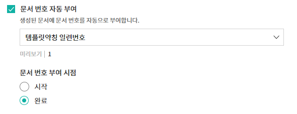
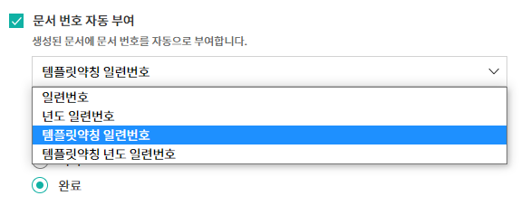
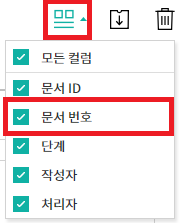
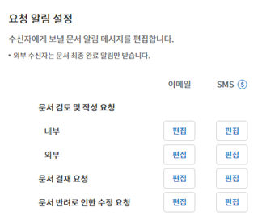
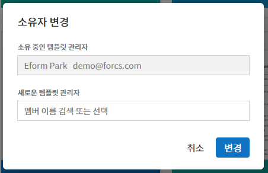
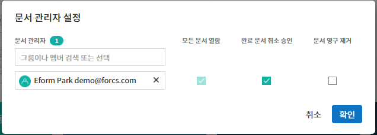

템플릿-폼 빌더¶
템플릿 소개¶
폼 빌더 템플릿 템플릿은 이폼사인에서 사용하는 전자문서 서식입니다. 기존에 종이로 작성하던 계약서, 신청서, 동의서와 같이 기본 서식을 전자문서 형태로 만든 것을 템플릿이라고 합니다. 템플릿은 이폼사인 서비스내 웹폼 디자이너 또는 이폼사인 폼 빌더를 통해 만들고 업로드 할 수 있습니다. 웹폼 디자이너를 통한 템플릿 설정 및 관리 방법은 ???를 참고해 주세요.
템플릿 개요¶
이폼사인을 통해 전자문서를 작성 및 전송하려면 전자문서를 생성할 수 있는 템플릿을 우선 만들어서 배포해야 합니다.
폼 빌더로 템플릿 만드는 방법
폼 빌더로 템플릿을 만들기 위해서는 우선 이폼사인 폼 빌더를 다운로드 해야합니다.
참고
폼 빌더에 대한 상세한 설명은 ???를 참고하시기 바랍니다.
기존에 워드, 엑셀, 파워포인트 등 MS Office 문서로 만들어진 파일을 폼 빌더를 사용하여 이폼사인에 템플릿으로 업로드 할 수 있습니다.
워드, 엑셀 또는 파워포인트 파일을 엽니다.
OZ in Word(Excel 또는 PPT) 메뉴로 이동합니다.
입력항목를 추가할 위치를 선택합니다.
입력항목 종류를 선택합니다.
추가된 입력항목의 크기와 위치를 조정합니다.
실행 버튼을 클릭해 입력항목의 동작을 확인합니다.
업로드 버튼을 클릭해 템플릿을 업로드 합니다.
템플릿 설정
생성할 템플릿에 대한 상세 설정을 할 수 있습니다.
일반 설정
템플릿 이름, 약칭, 문서 제목, 문서 번호 등을 설정합니다.
권한 설정
해당 템플릿을 사용해 문서를 생성할 수 있는 템플릿 사용 권한과 생성된 문서를 관리할 멤버 또는 그룹을 지정합니다.
워크플로우 설정
문서의 작성부터 완료까지 작성된 문서가 처리될 단계를 설정합니다.
필드 설정
필드의 기본값, 자동 입력 값 등을 설정합니다.
알림 설정
해당 템플릿을 통해 생성되는 문서의 요청 또는 상태 변경시 알림을 수신할 채널, 수신자, 또는 알림 메시지 내용 등을 설정합니다
워크플로우 개요¶
워크플로우 워크플로우란 문서가 작성되어 완료되기까지의 문서의 요청 및 처리 과정을 말합니다.
워크플로우는 템플릿 관리자가 템플릿 별로 템플릿 설정 > 워크플로우 설정에서 설정할 수 있습니다.
워크플로우는 시작 - 완료가 기본 단계이며, 아래와 같이 결재자, 내부 수신자, 외부 수신자 3가지 단계를 원하는 대로 추가하여 워크플로우를 생성할 수 있습니다.
워크플로우 단계¶
결재자
동일한 회사에 소속된 멤버에게 문서의 결재를 요청하는 단계입니다.
내부 수신자
멤버에게 문서의 처리를 요청하는 단계입니다.
외부 수신자
회사 소속 멤버가 아닌 외부 사용자에게 문서 처리를 요청하는 단계입니다.
중요
결재와 내부 수신자의 차이!
결재자와 내부 수신자는 모두 요청받은 문서에 대한 승인 또는 반려할 수 있지만 내부 수신자로 요청 받은 멤버의 경우, 문서 검토 및 작성 후 다음 담당자를 지정할 수 있습니다.
즉, 내부 수신자 단계 이후의 외부 수신자, 내부 수신자 또는 결재자를 지정할 수 있습니다.
예를 들어, 타 부서의 결재라인을 지정하지 않은 상태에서 해당 문서에 대해 타 부서에 협조 요청을 할 경우, 내부 수신자 단계로 해당 타 부서의 담당자를 지정하면 됩니다. 문서 처리시 타 부서의 담당자가 해당 부서의 결재라인을 따로 설정하여 문서를 처리할 수 있습니다.
템플릿 설정¶
업로드한 파일로 생성될 템플릿에 대한 상세 내용을 설정할 수 있습니다.
참고
이 작업은 대표 관리자 또는 템플릿 관리 권한이 필요합니다.
이 작업은 PC, 모바일, 애플리케이션에서 진행할 수 있습니다.
템플릿 설정 화면으로 이동하는 방법
사이드바 메뉴에서 템플릿 관리로 이동합니다.
원하는 템플릿의 이름이나 설정 아이콘(
 )을 클릭합니다.
)을 클릭합니다.
{kind=link}
일반 설정¶
{kind=link}
- 템플릿 기본정보 설정
템플릿 이름, 카테고리, 유효기간 등 템플릿에 대한 기본 정보를 설정합니다.
- ① 폼 파일
eformsign 폼 빌더를 통해 워드, 파워포인트, 엑셀에서 이폼사인에 업로드한 파일의 파일명입니다. 폼 파일 이름을 변경하려면 업로드한 워드, 파워포인트, 엑셀 파일의 파일명을 변경한 뒤 해당 폼을 업데이트 해야 합니다.
- ② 템플릿 이름
템플릿 관리, 새 문서 작성 메뉴 화면에 나타날 템플릿의 이름입니다.
템플릿 이름은 공백 포함 11글자 정도를 권장합니다. 11글자 이상 입력할 경우 전체 템플릿 이름은 이름 위에 마우스를 위치시킨 뒤 잠시 기다리면 확인할 수 있습니다.

템플릿 이름¶
- ③ 템플릿 약칭
템플릿을 간단히 표시하는 짧은 이름입니다. 2~3글자 정도의 짧은 단어를 권장합니다.
탬플릿 약칭은 문서번호, 문서 제목, 메일 템플릿 등에서 $$를 입력해 사용할 수 있습니다.

템플릿 약칭¶
- ④ 카테고리
템플릿을 종류별로 구분할 때 사용합니다. 카테고리 이름으로 템플릿 관리 화면의 템플릿이나 문서함, 문서 관리 메뉴의 문서들을 필터링 할 수 있습니다. 기존의 카테고리에서 선택하거나 새로운 이름을 입력해 새로운 카테고리를 생성할 수 있습니다.
구분자( / )를 사용하면 다단계 카테고리를 설정할 수 있습니다. 예를 들어, 카테고리를 인사팀/휴가관련으로 설정하면 1단계 카테고리인 인사팀 안에 2단계 카테고리인 휴가관련 카테고리가 생성됩니다.
- ⑤ 설명
템플릿에 대한 추가적인 설명을 입력합니다. 이 설명 내용은 목록 및 새 문서 작성의 템플릿 이름 하단에 나타납니다.
- ⑥ 문서작성 유효기간
템플릿으로 문서를 생성할 수 있는 기한을 설정합니다. 시작일은 템플릿을 업로드한 날로 기본 설정되며 날짜를 변경할 수 있습니다.
기간 제한 없음을 체크하면 계속해서 문서를 작성할 수 있습니다. 기간 제한 없음 체크를 해제한 후 날짜를 설정하면 설정된 날짜까지만 문서 생성이 가능합니다.
- 문서 설정
템플릿으로 생성한 문서에 대한 제목 설정 규칙 등 추가 설정을 합니다.
- ⑦ 문서 제목 자동 설정 규칙
템플릿으로 문서를 작성할 때 입력된 문서의 제목을 설정합니다. 문서 제목 규칙을 설정하지 않을 경우 템플릿 이름이 문서 제목이 됩니다.
문서 제목에는 $$ 와 {{ 를 사용하여 예약어를 추가할 수 있습니다.
- ⑧ 문서 제목 변경 허용
문서 제목 변경 허용을 체크하면 작성 단계의 문서 작성자가 문서 제목을 수정할 수 있습니다.
- ⑨ 문서 번호 자동 부여
템플릿 문서 번호 자동 부여 문서 번호 자동 부여를 체크하면 생성된 문서에 대해 자동으로 문서번호가 부여됩니다. 문서번호 표현식 중 원하는 표현식을 선택하고, 언제 문서번호를 생성할 지 문서번호 채번 시점을 선택합니다.

- ⑩ 문서 전송 시 팝업 생략
문서를 빨리 작성하고 제출하는 일이 많을 때 사용합니다. 이 설정을 체크하지 않으면 문서 전송 시 확인 메시지 입력 팝업창이 나타납니다. 문서 전송 시 팝업 생략을 체크하면 메시지 입력 팝업창이 나타나지 않고 바로 다음 단계로 진행됩니다.
일반 설정 > 문서 제목 규칙 만들기¶
템플릿 설정에서 해당 템플릿으로 생성되는 문서의 제목 규칙을 설정할 수 있습니다. 템플릿 문서 제목 규칙
문서에 입력된 내용, 또는 문서 작성 관련 정보가 문서 제목에 자동으로 입력되도록 설정할 수 있습니다. 문서 제목 규칙을 설정하면 문서 작성 시점의 정보를 바탕으로 문서 제목이 생성되며 이 제목은 모든 문서함(진행 중 문서함, 처리할 문서함, 완료 문서함)과 문서 관리 메뉴의 문서 목록에서 확인할 수 있습니다
참고
이 작업은 대표 관리자 또는 템플릿 관리 권한이 필요합니다.
{kind=link}
문서 제목 규칙 설정하는 방법
{kind=link}
사이드바 메뉴에서 템플릿 관리로 이동합니다.
템플릿의 설정 아이콘(
)을 클릭하여 템플릿 설정
화면으로 이동합니다.일반 설정 화면의 문서 제목 자동 설정 규칙 입력란에 원하는 제목 규칙을 입력합니다.
오른쪽 상단에 저장 버튼을 클릭하여 변경 사항을 저장합니다.
예약어 사용하는 방법 템플릿 예약어
{kind=link}
- {{
문서에 입력된 내용을 문서 제목에 추가하고자 할 때
문서 제목 규칙 입력란에 {{ 를 입력하면 템플릿의 입력항목 ID 리스트가 나타나며, 원하는 ID를 선택하면 해당 입력항목에 입력된 내용이 문서 제목에 추가됩니다.
- $$
문서와 관련된 정보를 제목에 추가하고자 할 때
문서 제목 규칙 입력란에 $$ 를 입력하면 드롭다운 메뉴가 나타나며 아래 정보 중 원하는 정보를 선택할 수 있습니다.
정보 종류
설명
현재_날짜
문서 작성 시점의 날짜 (예: 2020년 02월 20일)
현재_시간
문서 작성 시점의 시간 (예: 오후 02:59)
현재_날짜시간
문서 작성 시점의 날짜와 시간 (예: 2020년 02월 20일 오후 02:59)
최초_작성자_ID
문서를 작성한 멤버의 ID
최초_작성자_이름
문서를 작성한 멤버의 이름
최초_작성자_부서
문서를 작성한 멤버의 부서
최초_작성자_회사명
문서를 작성한 멤버의 회사명
템플릿명
템플릿 설정 > 일반설정에 입력된 템플릿명
템플릿_약칭
템플릿 설정 > 일반설정에 입력된 템플릿 약칭
회사명
회사 관리 > 회사 정보에 입력된 회사명
회사_주소
회사 관리 > 회사 정보에 입력된 주소
회사_연락처
회사 관리 > 회사 정보에 입력된 연락처
회 사_사업자_등록_번호
회사 관리 > 회사 정보에 입력된 사업자등록번호
회사_홈페이지
회사 관리 > 회사 정보에 입력된 홈페이지 URL
팁
문서 제목 변경 허용 여부를 확인하세요!
문서 제목 규칙을 설정해 놓더라도 문서 제목 변경 허용이 체크되어 있으면 문서 작성자가 임의로 문서 제목을 변경할 수 있습니다. 문서 제목이 변경되는 것을 원하지 않는 경우 문서 제목 변경 허용을 체크 해지하세요.
{kind=link}
설정 > 문서번호 생성 및 확인하기¶
이폼사인에서 생성되는 문서에 연속되는 문서번호를 부여할 수 있습니다. 템플릿 별로 문서 번호 자동 생성 여부를 설정할 수 있으며 번호 형식 4가지 중 한 가지를 선택해야 합니다. 문서 번호는 문서 입력항목을 사용하여 문서 내에 입력할 수 있습니다. 또한 문서 목록에서 별도의 컬럼으로 확인할 수 있으며 문서 번호로 문서를 검색할 수 있습니다.
문서번호 생성하는 방법 템플릿 문서 번호 자동 부여
참고
이 작업은 대표 관리자 또는 템플릿 관리 권한이 필요합니다.

문서번호 설정하기¶
사이드바 메뉴에서 템플릿 관리로 이동합니다.
템플릿의 설정 아이콘(
)을 클릭하여 템플릿 설정
화면으로 이동합니다.일반 설정 화면의 문서 번호 자동 부여를 체크합니다.
문서번호 규칙 선택하기
문서번호 규칙 선택¶
- ▪ 일련번호
문서 생성 순서대로 1번부터 생성
예) 1, 2, 3…
- ▪ 년도 일련번호
문서가 생성된 년도 + 번호 1번부터 생성
예) 2020_1, 2020_2…
- ▪ 템플릿약칭 일련번호
템플릿 약칭 + 번호 1번부터 생성
예) 신청서 1, 신청서 2…
- ▪ 템플릿약칭 년도 일련번호
템플릿 약칭 + 문서가 생성된 년도 + 번호 1번부터 생성
예) 신청서 2020_1, 신청서 2020_2…
문서 번호 부여 시점 선택하기
- ▪ 시작
문서를 작성하기 시작할 때 문서번호를 생성합니다.
- ▪ 완료
문서가 모든 워크플로우를 거쳐 완료가 될 때 문서번호를 생성합니다.
오른쪽 상단의 저장 버튼을 클릭해 설정을 저장합니다.
문서번호 확인하는 방법
생성된 문서번호는 문서 입력항목을 사용하여 문서 내에 입력하거나 문서 목록에서 확인할 수 있습니다.
문서 내에 문서번호 표시하기
문서번호는 폼 빌더의 문서 입력항목을 사용하여 문서 내에 입력할 수 있습니다.
워드, 엑셀, 파워포인트에서 해당 파일을 엽니다.
문서번호가 들어갈 위치에 문서 컴포넌트를 추가합니다.
업로드 버튼을 눌러 문서를 이폼사인에 업로드합니다.
템플릿 설정 > 일반 설정에서 문서 번호 자동 부여를 체크합니다.
문서 번호 규칙을 선택합니다.
저장 버튼을 눌러 설정을 저장합니다.
문서 목록에서 문서번호 확인하기
문서번호는 문서 목록을 볼 수 있는 문서함(진행 중 문서함, 처리할 문서함, 완료 문서함) 및 문서 관리 메뉴(문서 관리 권한 필요)에서 확인할 수 있습니다.
사이드바 메뉴에서 문서함 또는 문서 관리 메뉴로 이동합니다.
오른쪽 상단의 컬럼 설정 아이콘을 클릭합니다.
컬럼 리스트의 문서번호를 체크합니다.

문서 목록에 문서번호 컬럼이 추가된 것을 확인합니다.
문서번호로 문서 검색하기
문서번호 검색은 상세 검색 기능을 통해 확인할 수 있습니다.
문서함 또는 문서 관리 메뉴로 이동합니다.
문서 목록 상단의 상세 버튼을 클릭합니다.
검색 기준 중 문서번호를 선택합니다.
검색할 단어 또는 숫자를 입력합니다.
검색 결과를 확인합니다.
{kind=link}
{kind=link}
{kind=link}
권한 설정¶
권한 설정 화면에서는 템플릿 사용 권한과 문서 관리 권한을 설정할 수 있습니다.
{kind=link}
템플릿 사용 권한
템플릿 사용 권한 템플릿을 사용해서 문서를 생성할 수 있는 권한을 설정하며, 회사에 속한 모든 멤버가 사용할 수 있도록 전체 설정을 하거나 그룹 또는 멤버를 검색하여 선택할 수 있습니다.
문서 관리 권한
문서 관리 권한 그룹 또는 멤버를 선택하여 템플릿을 사용해서 생성된 문서를 열람하거나 완료 문서에 대한 취소 요청을 승인하거나, 문서를 영구적으로 제거할 수 있는 권한을 모두 또는 각각 설정할 수 있습니다.
모든 문서 열람(기본권한): 문서 관리자의 기본 권한으로 선택에 관계없이 문서 관리 권한이 부여된 그룹 또는 멤버는 모든 문서를 열람할 수 있는 권한이 부여됩니다.
완료 문서 취소 승인(선택시): 완료된 문서에 대해 문서 작성자가 취소를 요청할 경우 문서 취소 승인을 할 수 있는 권한이 부여됩니다.
문서 영구 제거(선택시): 시스템에서 문서를 영구적으로 제거할 수 있는 권한이 부여됩니다.

워크플로우 설정¶
템플릿 설정 화면에서 워크플로우 설정 탭을 클릭해 해당 템플릿의 워크플로우를 생성 또는 수정할 수 있습니다. 워크플로우
{kind=link}
워크플로우 단계 추가하는 방법
워크플로우 설정 탭을 클릭해 이동합니다.
시작과 완료 사이의 단계 추가(
 ) 버튼을 클릭합니다.
) 버튼을 클릭합니다.수신자 타입 선택에서 추가하고자 하는 수신자 타입을 선택합니다.
선택 시 워크플로우에 단계가 추가됩니다
팁
워크플로우 단계는 개수 제한없이 추가할 수 있습니다. 워크플로우 단계 옆에 위치한 화살표를 클릭하여 단계의 순서를 조정할 수 있습니다.
단계를 삭제하려면 단계 버튼 오른쪽에 위치한 X를 클릭하면 삭제됩니다.
{kind=link}
{kind=link}
워크플로우 단계별 상세 설정
단계를 클릭하여 각 워크플로우 단계별로 속성, 항목 제어 등 상세 내용을 설정할 수 있습니다.
속성은 단계 이름, 상태 설정 외에도 단계별로 설정이 필요한 항목을 세부적으로 설정할 수 있습니다.
항목 제어는 워크플로우 각 단계별로 수신자가 편집할 수 있도록 허용하는 편집 허용 필드와 필수로 입력해야 하는 입력 필수 필드를 설정할 수 있습니다.
참고
입력 필수 필드로 선택하면 문서 작성 시 해당 필드에 빨간색으로 표시되며, 입력하지 않을시 문서 전송이 되지 않습니다.
{kind=link}
- 시작: 문서를 작성하는 단계입니다. 워크플로우 시작
-
단계 이름(공통): 기본 이름으로 설정된 단계의 이름을 변경할 수 있습니다..
문서 생성 수 제한: 체크하여 해당 템플릿으로 생성되는 최대 문서 개수를 설정할 수 습니다.
URL로 문서 생성 허용: 멤버가 아닌 외부 사용자에게 요청시 이폼사인에 로그인하지 않고 URL을 통해 바로 접속하여 문서를 처리할 수 있는 공개 링크를 생성합니다.
문서 중복 전송 방지: 문서를 중복으로 전송하는 것을 방지하며, 필드를 선택해 해당 필드를 기준으로 중복 여부를 확인합니다.
- 결재자: 회사 내부 결재자에게 문서 결재를 요청하는 단계입니다. 워크플로우 결재자
-
표시 이름: 문서 작성 후 결재 또는 외부자 처리시 표시되는 이름을 설정합니다. 입력을 안할 경우 아래와 같이 기본값으로 나타납니다.
- 내부 수신자(멤버): 회사 내부 멤버에게 문서 처리를 요청하는 단계입니다. 워크플로우 내부 수신자(멤버)
-
수신자: 내부 수신자 단계를 처리할 멤버를 설정합니다.
이전 단계 처리자: 시작 단계 포함 이전 단계의 내부 수신자가 문서를 처리하도록 설정합니다. 단계를 선택할 수 있습니다.
그룹 및 멤버: 그룹 또는 멤버 중 한 사람이 문서를 처리하도록 설정합니다. 그룹 또는 멤버는 여러 명을 선택할 수 있습니다.
- 외부 수신자: 멤버가 아닌 외부 사용자에게 문서 처리를 요청하는 단계입니다. 워크플로우 외부 수신자

문서 전송 기한: 일정 기간이 지나면 외부 수신자에게 보낸 URL 링크가 만료되도록 설정합니다.
수신자 정보 자동 설정: 외부 수신자에게 문서 요청시 문서에 입력된 정보를 바탕으로 외부 수신자의 이름 및 연락처를 자동으로 설정할 수 있습니다.
문서 열람 전 비밀번호 설정: 수신자의 이름, 보내는 사람이 직접 입력 또는 입력항목 중 하나를 선택하여 사용 등의 방법으로 외부 수신자가 문서 처리시 입력해야할 인증 비밀번호를 설정할 수 있습니다.
비밀번호 힌트: 외부 수신자가 문서 열람시 비밀번호를 입력할때 표시될 안내 문구를 설정할 수 있습니다.
문서 검토 전 휴대폰 본인확인: 외부 수신자가 문서 열람을 위해 휴대폰 본인확인을 하도록 설정합니다. 본 기능은 추가 요금이 발생합니다.
- 완료: 문서가 모든 워크플로우 단계를 거쳐 최종 완료되는 단계입니다. 워크플로우 완료
-
별도의 파일 저장소에 완료 문서 저장하기: 대표 관리자 또는 회사 관리자가 별도로 설정한 외부 클라우드 저장소에 완료된 문서가 저장되도록 설정합니다.
완료 문서에 타임스탬프 찍기: 완료된 문서가 그 이후 변경되지 않았음을 증명하는 타임스탬프가 적용되도록 설정합니다. 본 기능은 추가 요금이 발생합니다.
{kind=link}
{kind=link}
{kind=link}
{kind=link}
{kind=link}
{kind=link}
필드 설정¶
템플릿 필드 설정 필드 설정에서는 템플릿에 들어가는 필드의 기본값 또는 자동입력 값을 설정하고 필드의 순서를 조정할 수 있습니다.
{kind=link}
필드의 기본값은 사용자 정의 필드 관리에 저장되어 있는 회사/그룹/멤버 정보를 입력되도록 설정하거나, 최근 입력값 선택 또는 사용자가 직접 입력하도록 설정할 수 있습니다.
자동 입력 설정하는 방법
문서에 자주 입력하는 정보를 미리 저장하고 자동으로 입력되도록 설정할 수 있습니다.
예를 들어, 작성자의 이름, 연락처 등 작성자 정보, 부서명, 책임자, 회사 대표 번호 등 회사 또는 그룹에 대한 정보를 미리 저장하여 자동으로 입력되도록 설정할 수 있습니다. 관련 필드의 항목 추가 및 기본 값 설정은 회사 관리 > 사용자 정의 필드 관리에서 할 수 있습니다.
회사 관리 > 사용자 정의 필드 관리 화면에서 필드를 추가합니다.
템플릿 관리 메뉴로 이동합니다.
템플릿 설정 아이콘을 클릭합니다.
필드 설정 메뉴로 이동합니다.
자동 입력이 되도록 설정할 필드의 기본값을 입력합니다.
모든 설정을 완료한 후 저장 버튼을 클릭합니다
알림 설정¶
템플릿 알림 설정 템플릿으로 생성되는 문서의 요청 또는 상태 알림을 수신할 채널, 수신자 설정 및 내용 확인, 편집 등을 할 수 있습니다.
알림 채널 설정
내부 수신자 및 외부 수신자에게 보낼 알림 채널을 설정합니다. 이메일 또는 SMS 중 하나 또는 모두를 선택할 수 있습니다.
참고
SMS는 유료 기능으로, 선택시 추가 요금이 발생됩니다.
SMS 선택 시, 문자로 보내기와 카카오톡으로 보내고 전송 실패시 문자로 보내기가 활성화 됩니다.
문자로 보내기: 수신자에게 SMS로 알림 메시지를 전송합니다.
카카오톡으로 보내고 전송 실패시 문자로 보내기: 수신자에게 카카오톡으로 알림 메시지를 전송하고 카카오톡을 사용하지 않는 수신자에게는 SMS로 전송됩니다.
알림 채널 설정¶
요청 알림 설정
해당 템플릿으로 생성된 문서를 수신자에게 요청시 발송되는 알림 메시지를 확인하고 편집할 수 있습니다. 각 알림 템플릿 메시지는 회사 관리 > 알림 템플릿 관리 페이지에 설정된 내용에 따라 기본적으로 반영되어 있으며, 편집 버튼을 클릭해 직접 메시지를 편집할 수 있습니다.
참고
SMS 템플릿 편집 기능은 유료 요금제 구독 회사에게만 제공되는 기능입니다.
각 알림 템플릿 메시지는 회사 관리 > 알림 템플릿 관리 페이지에 설정된 내용에 따라 기본적으로 반영되어 있으며, 편집 버튼을 클릭해 직접 메시지를 편집할 수 있습니다.


문서 검토 및 작성 요청 > 내부: 내부 수신자에게 문서 검토 및 작성 요청 시 내부 수신자에사성게 전송하는 요청 알림 메시지를 편집할 수 있습니다.
문서 검토 및 작성 요청 > 외부: 외부 수신자에게 문서 검토 및 작성 요청 시 외부 수신자에게 전송하는 요청 알림 메시지를 편집할 수 있습니다
문서 결재 요청: 결재자에게 문서 결재 요청 시 결재자에게 전송하는 요청 알림 메시지를 편집할 수 있습니다
문서 반려로 인한 수정 요청: 결재자, 내부 수신자, 외부 수신자가 문서 반려 시 문서 요청자에게 전송하는 요청 알림 메시지를 편집할 수 있습니다.
상태 알림 설정
해당 템플릿으로 생성된 문서의 진행 상태 알림의 수신자를 설정하고 알림 메시지의 미리보기(문서 승인/검토 및 작성/반려/취소/수정 알림) 또는 편집(문서 최종 완료 알림)이 가능합니다.
참고
문서 반려 알림, 문서 취소 알림, 문서 수정 알림은 이메일 템플릿만 제공되고, SMS으로는 전송되지 않습니다.
문서 최종 완료 알림(내부/외부)의 SMS 템플릿은 유료 요금제 구독 회사만 편집할 수 있습니다.
{kind=link}
참고
최초 작성자 옵션에 체크, 단계별 처리자 옵션 체크 해제 시, 문서를 최초 작성한 사람에게 상태 알림을 전송합니다.
최초 작성자 옵션 체크 해제, 단계별 처리자 옵션에 체크 시, 최초 작성한 사람을 제외하고 현재 단계 이전에 문서를 처리한 사람들에게 상태 알림을 전송합니다.
최초 작성자, 단계별 처리자 옵션 모두 체크 시, 최초 작성한 사람, 현재 단계 이전에 문서를 처리한 사람 모두에게 상태 알림을 전송합니다.
최초 작성자, 단계별 처리자 옵션 모두 체크 해제 시, 해당 단계의 상태 알림을 전송하지 않습니다.
문서 승인 알림: 결재자가 문서 승인 시, 문서가 승인되었다는 알림을 전송합니다.
문서 검토 및 작성 알림: 내부 수신자 또는 외부 수신자가 문서 처리 시, 문서가 검토 및 작성되었다는 알림을 전송합니다.
문서 반려 알림: 결재자, 내부 수신자, 외부 수신자가 문서 반려 시, 문서가 반려되었다는 알림을 전송합니다.
문서 취소 알림: 취소 요청된 문서에 대해 취소가 승인되었을 경우, 문서가 취소되었다는 알림을 전송합니다.
문서 수정 알림: 최초 작성자가 문서를 수정한 경우, 문서가 수정되었다는 알림을 전송합니다.
문서 최종 완료 알림 > 내부: 문서가 최종 완료된 경우, 해당 문서의 최초 작성자, 결재자, 내부 수신자에게 문서가 최종 완료되었다는 알림을 전송합니다.
문서 최종 완료 알림 > 외부: 문서가 최종 완료된 경우, 외부 수신자에게 문서가 최종 완료되었다는 알림을 전송합니다.
참고
문서 최종 완료 알림 > 외부의 최초 작성자 옵션에 체크된 경우, 외부 사용자가 URL을 통해 문서를 생성 후 제출할 때, 최종 완료 알림을 수신할 정보를 입력해야 하며, 입력한 외부 수신자에게 상태 알림을 전송합니다.
개별 템플릿 메뉴¶
템플릿 관리 화면에서 템플릿 이름 오른쪽에 위치한 메뉴 아이콘()을 클릭하면 각 템플릿별 설정할 수 있는 메뉴가 나타납니다.
{kind=link}
복제: 템플릿을 복제합니다. 해당 템플릿의 폼 파일과 상세 템플릿 설정이 복제되며 상세 설정을 변경하여 저장할 수 있습니다.
삭제: 템플릿을 삭제합니다. 템플릿이 삭제되면 더 이상 해당 템플릿으로 문서를 생성할 수 없습니다.
파일 다운로드: 파일 다운로드를 클릭하면 업로드한 파일 양식으로 다운로드 됩니다.(예, 워드, 엑셀 파일 등)
비활성화: 템플릿을 비활성화하면 다른 멤버의 새 문서 작성 페이지에 표시되지 않습니다.
소유자 변경: 템플릿의 소유자를 변경할 수 있습니다. 기본적으로 템플릿 소유자는 템플릿을 생성한 사람으로 자동 지정됩니다. 이후 변경하고자 할 경우, 소유자 변경을 통해 다른 멤버로 소유자를 변경할 수 있습니다. 템플릿 소유자는 템플릿 관리 권한을 가진 멤버 중에 선택할 수 있습니다.

문서 관리자 설정: 해당 템플릿으로 작성되는 문서의 관리자를 설정할 수 있습니다. 템플릿 설정 > 권한 설정과 동일합니다.

{kind=link}